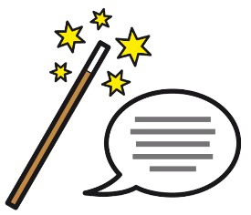

Hier wird jeder Bereich vom Terminal kurz erklärt. Tippe auf ein Kapitel. Dann öffnet sich die Erklärung.
Kapitel 1
Terminal allgemein
›
- Das Terminal zeigt Infos auf PC oder Bildschirm.
- Es ist für Mitarbeitende mit Werkstattvertrag.
- Tippen auf eine Kachel öffnet das gewünschte Thema.
- "Intern" markierte Inhalte öffnen nur bei Studjo.
Kapitel 2
Barrierefreiheit
›
- Das "H" ist unten rechts auf vielen Seiten.
- Es kann Schrift größer machen und auf schwarz/weiß umstellen.
- Ein Klick auf das "Ohr" liest dir Inhalte vor.
- Ein weiterer Klick auf das "Ohr" schaltet das Vorlesen aus.

Kapitel 3
📰 Neuigkeiten bei Studjo
›
- Hier siehst du von Zeit zu Zeit Nachrichten von Studjo.
- Zum Beispiel Änderungen oder Infos.
- Die Inhalte sind kurz und in Leichter Sprache.

Kapitel 4
📅 Termine
›
- Hier findest du wichtige Termine.
- Zum Beispiel zu Werkstattfesten oder die Schließungstage.
- So verpasst du nichts Wichtiges.

Kapitel 5
🍽️ Speiseplan
›
- Hier ist das Angebot vom Mittessen bei Studjo.
- Oben findest du immer das nächste Essen als Bild.
- Unten sind die Speisepläner der nächsten 2 Wochen und das Bistro95 Angebot

Kapitel 6
🎯 Arbeitsbegleitende Angebote
›
- Hier stehen begleitenden Angebote neben der Arbeit.
- Zum Beispiel: AbA zur Entspannung oder Bewegung.
- Aber Achtung: Aktuelle Ausfälle stehen hier nicht.

Kapitel 7
📖 Werkstattordnung und Regeln
›
- Hier stehen die Regeln für Studjo.
- Die Regeln gelten für alle Menschen.
- Die Kacheln funktionieren nur bei Studjo.

Kapitel 8
🛡️ Gewaltschutz
›
- Hier bekommst du Infos zum Thema Gewalt.
- Konzepte und ein Video in einfacher Sprache.
- Die Kacheln funktionieren nur bei Studjo.

Kapitel 9
⚠️ Arbeitssicherheit
›
- Hier siehst du, wie du sicher arbeitest.
- Zum Beispiel findest du Ansprechpartner in Notfällen.
- Oder Infos zum Brandschutz und Fluchtpläne.

Kapitel 10
🗣️ Werkstattrat und Frauenbeauftragte
›
- Der Werkstattrat setzt sich für dich ein.
- Die Frauenbeauftragte hilft bei Fragen von Frauen.
- Die Kacheln funktionieren nur bei Studjo.

Kapitel 11
🎬 Info-Filme
›
- Hier kannst du kurze Filme anschauen.
- Die Filme erklären wichtige Themen in einfacher Sprache.
- Die Kacheln funktionieren nur bei Studjo.

Kapitel 12
🌍 Allgemeine Nachrichten
›
- Hier stehen Nachrichten aus der Welt.
- Wähle oben zwischen Deutschlandfunk, Tagesschau oder Kobinet
- Das "H" unten rechts liest dir beim "Ohr" immer den 1. Satz vor

Kapitel 13
🌤️ Wetter
›
- Hier ist das Wetter von heute und die nächsten Tage.
- Die Felder zeigen unsere 4 Standorte.
- So weißt du, was du anziehen kannst ;-)

Kapitel 14
🚌 Adressen und Fahrpläne
›
- Hier findest du Verbindungen von Bussen und Bahnen.
- Auch die nächsten Abfahrten ab einer Haltestelle kannst du abfragen.
- Unten findest du alle Adressen von unseren Betriebsstätten.

Kapitel 15
📖 Losung für heute
›
- Hier steht jeden Tag ein Satz aus der Bibel.
- Oben aus dem Alten Testament, unten aus dem Neuen Testament.
- Studjo ist bekanntlich eine diakonische Einrichtung.

Kapitel 16
🌟 Wochenmotto
›
- Hier steht ein Motto für diese Woche.
- Das kurze Motto soll dich freundlich begleiten.
- Darunter kannst du mehr dazu lesen.

Kapitel 17
❓ Häufige Fragen
›
- Hier findest du Antworten auf einige Fragen.
- Zum Beispiel über Urlaub oder Krankheit.
- Tippe einfach auf eine Frage.
- Unter jeder Frage ist aufgeklappt ein kleines Quiz versteckt.